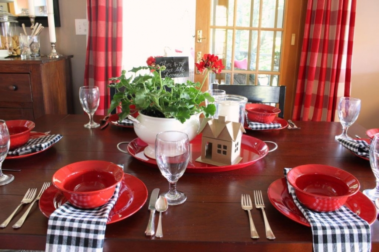
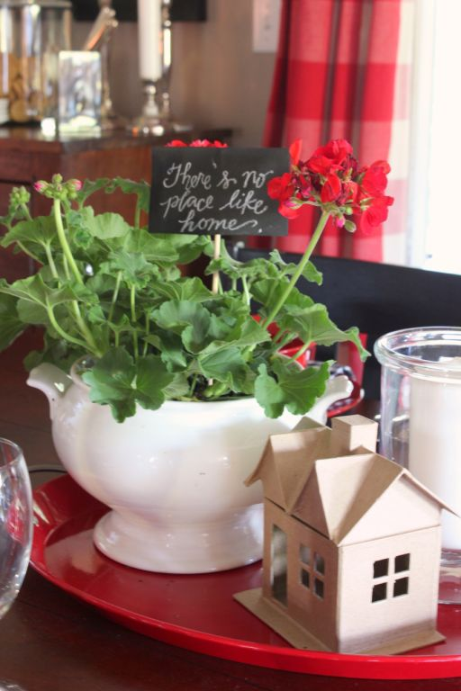

.png)
.PNG)
.PNG)
.PNG)
.PNG)
.PNG)
.JPG)
.JPG)
.PNG)
.PNG)


Here’s a look at the table.
Red dishes, black and white gingham napkins, and red geraniums. Just my normal everyday things, but I did add a small chalk sign that read, “There’s no place like home.” And I added one more small kraft paper house for the welcome home dinner.


We started our dinner with an appetizer of apple slices with Heath Brickle dip (recipe here.) The dessert is also in this photograph. I set them both out on the small table in the family room.
For our entree, we set up cut up steak, chicken, bell peppers, onions, mushrooms, and tomatoes, and added 5 different sauces for a make-your-own-shish-kebob-bar.
Here’s a batch ready for the grill.
And here they are, all finished. We served them with a Caesar salad, rice pilaf, bread, and a dessert of strawberry shortcake made from fresh strawberries, whipped cream, and cream cheese pound cake.
After dinner we went to visit with other relatives.
On Sunday morning, we drove to Atlanta for brunch at Local 3 – our sons’ favorite restaurant. (Our oldest thinks their brunch is the best plate of food in Atlanta!) The restaurant is named for the three local chefs who came together to open it.
Here are a couple of their dining areas.
The wonderful thing about Sunday dining at Local 3 is their all you can eat brunch buffet. The food is amazing.
And what’s even better is the location of this buffet…it’s in the kitchen! You actually go through one of the largest restaurant kitchens in Atlanta to fill your plate.
(Sorry these are fuzzy..I was in line and filling my plate with all the yummy food. 🙂 )
I loved this at the end of the kitchen. 🙂
Here’s my first plate: tomato soup, scrambled eggs, custard french toast with berries, bacon, L3 potatoes, egg salad crostini, and my favorite…the beet salad. Oh my goodness was it delicious! (I had several servings of it.)
Our younger son works for an Emory University professor, and he invited him to join us for brunch. We had quite a delightful meal together. 🙂
Local 3 is located in a beautiful development in downtown Atlanta called the Piazza at Paces. There is European styled architecture among the four large buildings and wonderful gardens.
After brunch, our Emory working son headed his way in Atlanta, and we took our Seattle son to the airport. It was soooo good to see our boys for the weekend.
We will be empty nesters for only a short while longer. Our daughter finishes up her internship with Disney in a week and will be headed home for a break until August. We are excited to see her!
Thank you for letting me share our weekend with you. I will have more pretty houses for you to see in the next post. So please come back for a visit again. 🙂
Until next time…


.PNG)
Good looking boys!!! You put such love into everything you do.
———————————————————————
I try to. 🙂 Thank you for the compliments on our sons.
Kelly
Kelly,
Your entire weekend looks like it was delightful. I wish everyone safe travels and returns. Thanks for sharing. Take care.
———————————————————————
Thank you Dawn! It was a very fun weekend to be sure. 🙂
Kelly
Love the red with the black and white on your table! The best Mother’s Day gift is having your children home for a while (even if it was the weekend before Mother’s Day for your sons). Since you are getting so close to your retirement day, I can’t wait to see what your posts will have in store for us!
———————————————————————
Thank you Emily. I am glad you liked it! Yes, I am looking forward to being able to get more done on the blog in retirement. I might actually have time to read some blogs!
Kelly
What a great homecoming! So happy you enjoyed your boys’ visit. There is nothing like having your “babies” home. :). Our baby girl (who turns 25 next month) is coming home next week from Scottsdale after being away for nine months. We are so excited to have her home! You are an inspiration, Kelly.
———————————————————————
Whoa…away from home for 9 months. That definitely deserves a big welcome home! I know you are enjoying her visit. 🙂
Kelly
Oh…everything looks so good, both at your home and Local 3! And your sons…bet you missed them the minute they were out of your sight! (Always happens to me.). Enjoy the week with your daughter! 😉
——————————————————————–
I did Donnamae. As our youngest went to his car and our oldest went in the airport, I had to swallow that lump in my throat. You know what that is like I’m sure.
Kelly
What a couple of great looking fellas! As a mom of 2 sons I can appreciate the long awaited visit. You must be so happy about your daughter coming home too! Your love for your family really shines through – Happy Mother’s Day! 🙂
——————————————————————–
Thank you so much Patti! If you have two sons, you do know how excited I was for their visit! Definitely looking forward to our daughter coming home…it certainly livens up the place around here when she is around!
Kelly
Hi Kelly
The food looks amazing but what I love most about this post is the great photo of your handsome sons. My wonderful son is camera shy and what I treasure most are the rare good photos I have of him. Glad you all had such a great time together.
————————————————————————-
Thank you Tricia. I loved that photo of our sons too, and I know what you mean about camera shy boys. Ours used to make goofy faces when I tried to get a picture, but they eventually learned that I would leave them alone more quickly if they would just give me one good shot with a “normal” expression. (I really shouldn’t be so demanding of them since I hate having my photo taken too!)
Kelly
Kelly,
I love the little wood/cardboard(?) house on the table, such an appropriate touch “no place like home”. 🙂
Buffets are a delicious danger…all you can eat of wonderful food. What could be better?
You have such handsome sons, it sounds like such a great visit.
xo,
Karen
———————————————————————–
Glad you liked it Karen! The houses are made of kraft paper covered cardboard. And yes, buffets most certainly are dangerous things. Thank goodness they did not have too many desserts. I think our oldest ate 10 of the tiny peanut butter shortbread bars! I’m lucky that a salad was my favorite thing there. 🙂 Thank you for the compliments on the boys.
Kelly
It’s all wonderful, but I’m sure the time with your boys was your favorite part:-)
I’ve got a big weekend of cooking ahead of me and your kebobs look so good. I think I will try that for a change. Thanks for the inspiration.
——————————————————————-
You are quite right about my favorite part of the weekend Sue. 🙂 Enjoy your big weekend! The kabobs were good. I put Dale’s sauce on mine, and I really liked the flavor. It can be very salty so I used it sparingly.
Kelly
Glad to hear more details of the visit. Sounds like it was memorable….all the elements were there–good food, good times with people you love.
May God bless you with many many more good times and good memories.
——————————————————————–
I couldn’t have asked for a better weekend…well actually, I could have asked for it to be longer! 🙂 There was indeed good food, good times, and good memories made with good people.
Kelly
What a fun weekend!! As always I love your table. My daughter and son-in-law hopefully will be here in a few weeks to stay a week so I have been meal planning. Kabobs, rice pilaf and strawberry shortcake is on my menu! Well, I’m sure Caesar salad too since it is our son-in-law’s favorite salad. 🙂
——————————————————————-
Thank you for your sweet compliments Gina. 🙂 How wonderful that your daughter and her husband will be able to stay for a week. (I’m jealous!) I bet they would love the meal with the kabobs. We’ve done them several times, and they can be messy when you pour sauces on them, so keep a large tray or platter nearby when you assemble them. And we assigned everyone a “last item” so that we would know whose kabob belonged to whom. (All of mine ended with a mushroom, my husband’s ended with green bell pepper, etc.)
Kelly
Food Overload!! Love it! Between your Kabob dinner and your fun brunch…Well, I’m drooling! 🙂 Loved your little theme and special sign of “No Place like Home”. Agree! How sweet of your sons to be cooperative for such an endearing picture. Good looking men, I’d say! P. S. With a Mom like you, who always goes “all out” for her family, who wouldn’t want to come home! You get my vote for #1 Mom! Have yourself a wonderful Mothers Day, Kelly!
——————————————————————–
That’s a good way to put it…an overload! I think the boys humored me for the photo because we were in a hurry to get off to Atlanta, and they knew I would not take long. (Just a short period of torture for them! 🙂 )Thanks for the vote, but I am far from a #1 Mom. Happy Mom’s Day to you too Debra. Thank you for your always sweet and encouraging comments!
Kelly
What a great weekend of visiting with your sons and eating great food! I didn’t know about this restaurant, but the next time I’m in Atlanta, I hope to look it up. Glad you had fun.
———————————————————————
It was a great weekend for sure! (Tooooo much eating!!) Do look it up the next time you are in Atlanta. They only do the brunch on Sunday morning though, so that is the best time to go. One summer they did a special month of Burgers and Brew (I think that is what they called it.) Anyway, our sons still to this day, rave about the burgers they had there….best ever. So if they do that again, you should also check that out.
Kelly
How do you stay so skinny Kelly??? I think I gained some weight just looking at all that food. I am definitely going to try that restaurant sometime. Now that we have Charles and Nancy living in Canton, we will get to visit Hotlanta more. Still waiting on that baby!!
———————————————————————-
I’m not skinny. In fact, I hope to lose some weight once I retire. (School lunches have helped to put the weight on me.) Still waiting?? Good grief! She needs to hurry up and make her appearance! But on the other hand, a birthday of 5-10-15 would be pretty neat! (That’s the math teacher in me coming out. 🙂 )
Kelly
I *love* the ‘corrected’ signage – so much more fun than swapping the platters round!! LOL
And OH the food… your posts are not good for my diet Kelly (but I forgive you :-))
———————————————————————
Frances, this is not our normal everyday intake. That weekend had waaaaay too much yumminess…nope these posts are not good for anyone’s diet!
Kelly